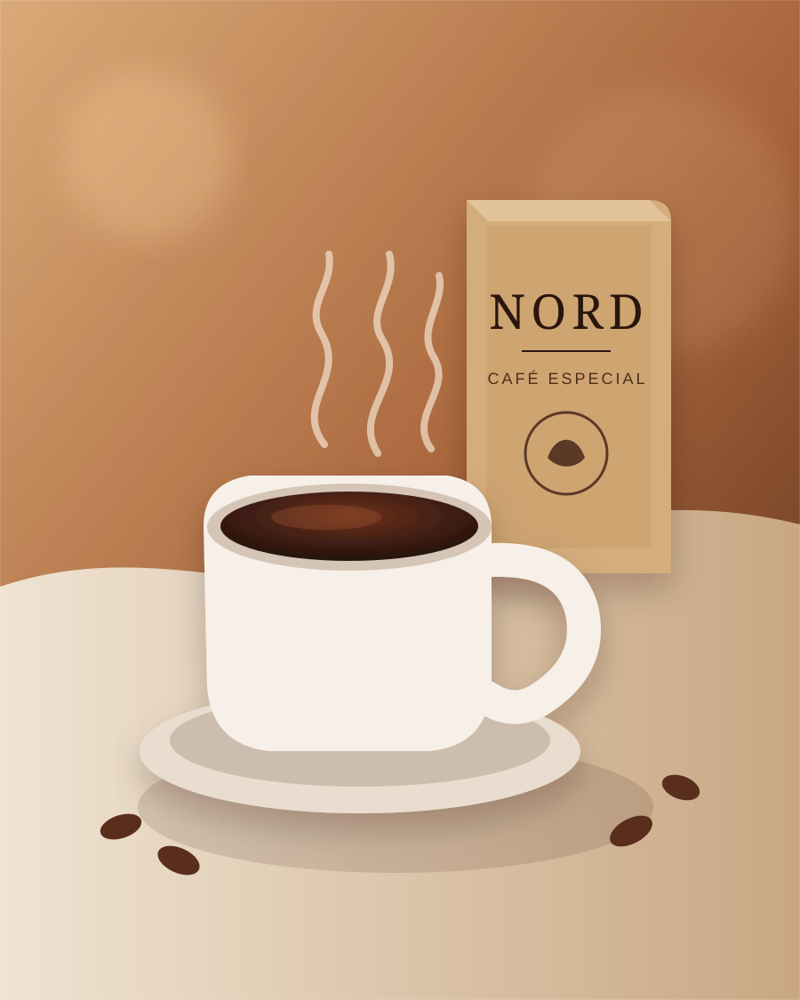

01
Torra Clara
Delicada, aromática e leve. Para quem gosta de perceber cada nuance.
SuaveESCOLHA SEU PERFIL
Cada torra revela uma experiência única. Descubra seu perfil favorito e encontre a NORD que combina com você.
Delicada, aromática e leve. Para quem gosta de perceber cada nuance.
SuaveEquilibrada e versátil. Uma escolha fácil para diferentes métodos.
EquilíbrioEncorpada e marcante. Para quem prefere presença e final prolongado.
Intensidade
ARTE E CUIDADO
A NORD foi pensada para transformar uma pausa comum em um momento de atenção. Café bem apresentado, torra cuidadosa e uma experiência visual simples, quente e contemporânea.
PRONTO PARA DESCOBRIR?